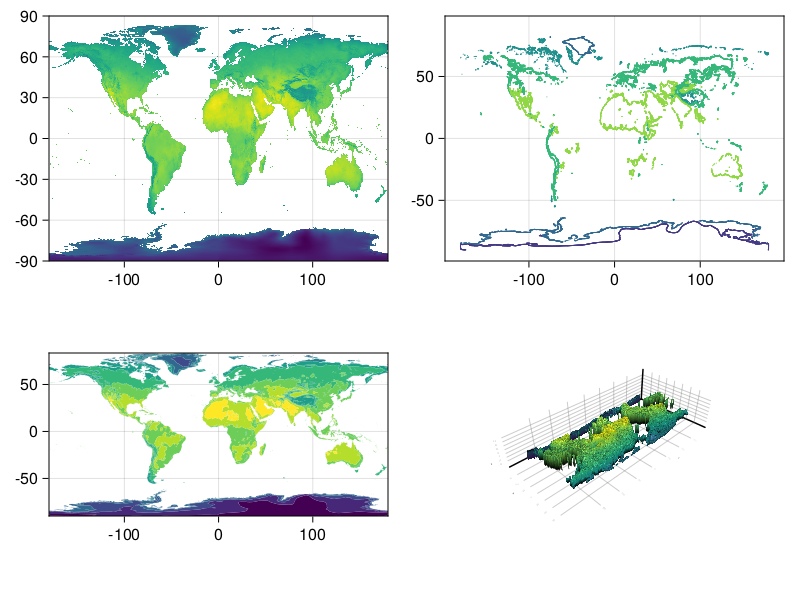
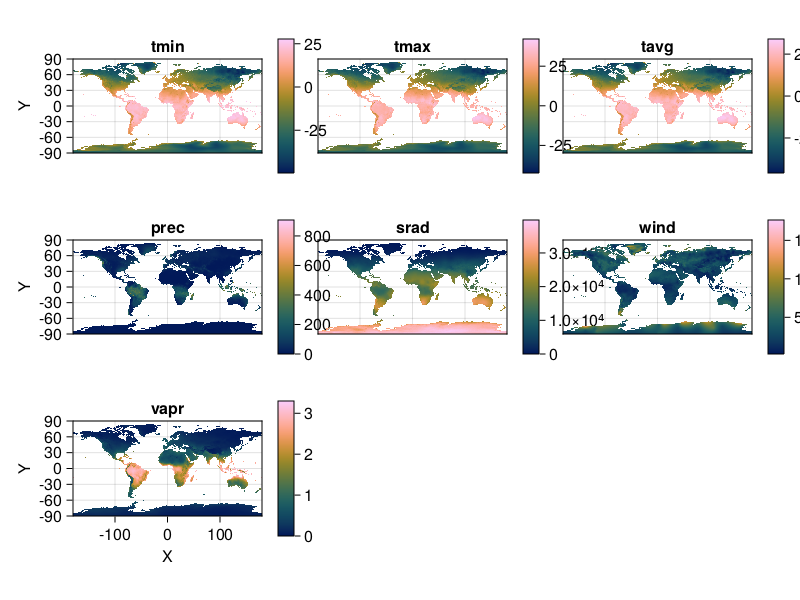
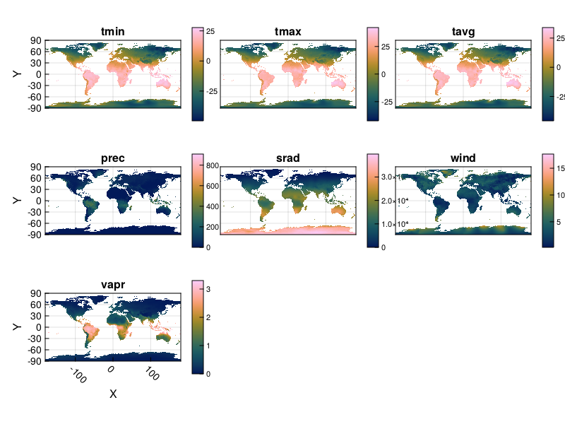
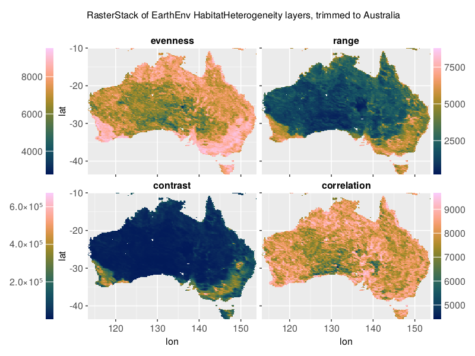

Examples with Makie
Plotting in Makie¤
Plotting in Makie works somewhat differently than Plots, since the recipe system is different. You can pass a 2-D raster to any surface-like function (heatmap, contour, contourf, or even surface for a 3D plot) with ease.
2-D rasters in Makie¤
using CairoMakie, Makie
using Rasters, RasterDataSources, ArchGDAL
A = Raster(WorldClim{BioClim}, 5) # this is a 3D raster, so is not accepted.
B = A[:, :, 1] # this converts to a 2D raster which Makie accepts!
fig = Figure()
plot(fig[1, 1], B)
contour(fig[1, 2], B)
ax = Axis(fig[2, 1]; aspect = DataAspect())
contourf!(ax, B)
surface(fig[2, 2], B) # even a 3D plot works!
fig

3-D rasters in Makie¤
Warning
This interface is experimental, and unexported for that reason. It may break at any time!
Just as in Plots, 3D rasters are treated as a series of 2D rasters, which are tiled and plotted.
You can use Rasters.rplot to visualize 3D rasters or RasterStacks in this way. An example is below:
stack = RasterStack(WorldClim{Climate}; month = 1)
Rasters.rplot(stack; Axis = (aspect = DataAspect(),),)

You can pass any theming keywords in, which are interpreted by Makie appropriately.
The plots seem a little squished here. We provide a Makie theme which makes text a little smaller and has some other space-efficient attributes:
CairoMakie.set_theme!(Rasters.theme_rasters())
Rasters.rplot(stack)

reset theme
using Makie
Makie.set_theme!()
Plotting with Observables, animations¤
Rasters.rplot should support Observable input out of the box, but the dimensions of that input must remain the same - i.e., the element names of a RasterStack must remain the same.
CairoMakie.set_theme!(Rasters.theme_rasters())
stack_obs = Observable(stack)
fig = Rasters.rplot(stack_obs;
Colorbar = (; height= Relative(0.75), width=5,)) # `stack` is the WorldClim climate data for January
record(fig, "rplot.mp4", 1:12; framerate = 3) do i
stack_obs[] = RasterStack(WorldClim{Climate}; month = i)
end
"rplot.mp4"
using Makie
Makie.set_theme!() # reset theme
#
Rasters.rplot — Function.
Rasters.rplot([position::GridPosition], raster; kw...)
raster may be a Raster (of 2 or 3 dimensions) or a RasterStack whose underlying rasters are 2 dimensional, or 3-dimensional with a singleton (length-1) third dimension.
Keywords
plottype = Makie.Heatmap: The type of plot. Can be any Makie plot type which accepts aRaster; in practice,Heatmap,Contour,ContourfandSurfaceare the best bets.axistype = Makie.Axis: The type of axis. This can be anAxis,Axis3,LScene, or even aGeoAxisfrom GeoMakie.jl.X=X: The X dimension of the raster.Y=Y: The Y dimension of the raster.draw_colorbar = true: Whether to draw a colorbar for the axis or not.colorbar_position = Makie.Right(): Indicates which side of the axis the colorbar should be placed on. Can beMakie.Top(),Makie.Bottom(),Makie.Left(), orMakie.Right().colorbar_padding = Makie.automatic: The amound of padding between the colorbar and its axis. Ifautomatic, then this is set to the width of the colorbar.title = Makie.automatic: The titles of each plot. Ifautomatic, these are set to the name of the band.xlabel = Makie.automatic: The x-label for the axis. Ifautomatic, set to the dimension name of the X-dimension of the raster.ylabel = Makie.automatic: The y-label for the axis. Ifautomatic, set to the dimension name of the Y-dimension of the raster.colorbarlabel = "": Usually nothing, but here if you need it. Sets the label on the colorbar.colormap = nothing: The colormap for the heatmap. This can be set to a vector of colormaps (symbols, strings,cgrads) if plotting a 3D raster or RasterStack.colorrange = Makie.automatic: The colormap for the heatmap. This can be set to a vector of(low, high)if plotting a 3D raster or RasterStack.nan_color = :transparent: The color whichNaNvalues should take. Default to transparent.
using more vanilla Makie¤
using Rasters, RasterDataSources
#the data
layers = (:evenness, :range, :contrast, :correlation)
st = RasterStack(EarthEnv{HabitatHeterogeneity}, layers)
ausbounds = X(100 .. 160), Y(-50 .. -10) # Roughly cut out australia
aus = st[ausbounds...] |> trim
#the plot
#colorbar attributes
colormap = :batlow
flipaxis = false
tickalign=1
width=13
ticksize=13;
#figure
with_theme(theme_ggplot2()) do
fig = Figure(resolution=(800, 600))
axs = [Axis(fig[i,j], xlabel = "lon", ylabel = "lat") for i in 1:2 for j in 1:2]
plt = [Makie.heatmap!(axs[i], aus[l]; colormap) for (i,l) in enumerate(layers)]
[axs[i].title = string(l) for (i,l) in enumerate(layers)]
hidexdecorations!.(axs[1:2]; grid=false, ticks=false)
hideydecorations!.(axs[[2,4]]; grid=false, ticks=false)
Colorbar(fig[1, 0], plt[1]; flipaxis, tickalign, width, ticksize)
Colorbar(fig[1, 3], plt[2]; tickalign, width, ticksize)
Colorbar(fig[2, 0], plt[3]; flipaxis, tickalign, width, ticksize)
Colorbar(fig[2, 3], plt[4]; tickalign, width, ticksize)
colgap!(fig.layout, 5)
rowgap!(fig.layout, 5)
Label(fig[0, :], "RasterStack of EarthEnv HabitatHeterogeneity layers, trimmed to Australia")
fig
end
save("aus_trim.png", current_figure());

This page was generated using Literate.jl.